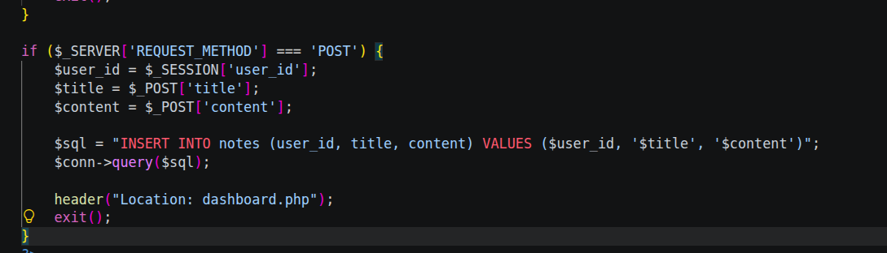
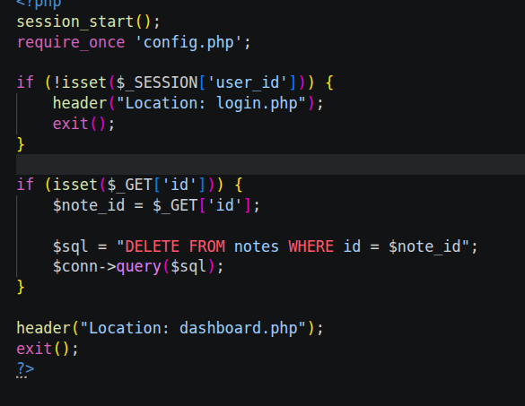
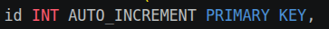

OWASP Top 10 · Tarea 1 (Sesión 1)
Contenido completo del documento original del ejercicio.
SESIÓN 1
Lee con detenimiento el OWASP Top 10 completo (Descripción, prevención y ejemplos).
Actividad 1
Coge las 10 categorías y realiza una breve descripción con tus palabras.
OWASP (Open Worldwide Application Security Project), es una comunidad abierta que genera un top 10 de vulnerabilidades más importantes en el sector tecnológico. Así, las organizaciones las tienen en cuenta y pueden usarla como referencia para sus proyectos. En el año 2025, estos son los top 10 y sus descripciones:
| Categoría | Descripción |
|---|---|
| A01:2025 - Pérdida de Control de Acceso | Un usuario puede ver o hacer cosas que no le corresponden. Por ejemplo, cambiar el ID en una URL para ver los datos de otra persona, o entrar a un panel de administración sin ser administrador. |
| A02:2025 - Configuración de Seguridad Incorrecta | Mala configuración de los sistemas. Algunos ejemplos son contraseñas por defecto, puertos abiertos, buckets públicos, mensajes de error con demasiados detalles o funciones innecesarias activadas. |
| A03:2025 - Fallas en la Cadena de Suministro de Software | Se usan dependencias, librerías, paquetes o herramientas de build que están comprometidos o son vulnerables. También cuenta con un pipeline de CI/CD sin protección. El riesgo viene del código de terceros en el que confías sin verificarlo. |
| A4:2025 - Fallas Criptográficas | Los datos sensibles no se protegen bien. Puede ser porque no se cifran, porque se usan algoritmos débiles u obsoletos, porque se gestionan mal las claves o porque se guardan contraseñas sin un hash seguro. |
| A5:2025 - Inyección | La aplicación se confunde y trata datos del usuario como si fueran órdenes. Ocurre con SQL, comandos del sistema o XSS. Se evita validando las entradas y usando consultas parametrizadas. |
| A6:2025 - Diseño Inseguro | Una mala decisión de arquitectura de software genera un diseño inseguro desde el principio. |
| A7:2025 - Fallas de Autenticación | El sistema no verifica bien quién eres. Contraseñas débiles permitidas, ausencia de MFA, sesiones que no caducan, tokens predecibles o ataques de fuerza bruta sin freno. |
| A8:2025 - Fallas en la Integridad del Software o de los Datos | Se confía en código o datos sin comprobar que no han sido alterados. Ejemplos: actualizaciones sin firma digital, deserialización insegura o scripts cargados de fuentes no verificadas. |
| A9:2025 - Fallas en el Registro, Alerta y Monitoreo de Seguridad | Si ocurre un ataque, nadie se entera a tiempo. Faltan logs útiles, no hay alertas, o nadie revisa lo que se registra. Así los ataques pasan días o meses sin detectarse. |
| A10:2025 - Manejo Inadecuado de Condiciones Excepcionales | La aplicación reacciona mal ante errores o situaciones raras. Puede fallar de forma "abierta" y dar acceso, revelar información en un error, quedarse colgada, o no controlar entradas inesperadas ni fallos de recursos. |
Ahora tienes que relacionar las categorías de OWASP top 10 con estos casos (no debes utilizar la IA):
Por ejemplo:
“La aplicación permite modificar /user.php?id=25 para acceder a otro usuario.” sería A01:2025 - Broken Access Control, porque el servidor le cree a cualquiera que cambie un número en la URL, sin verificar si esa persona de verdad tiene permiso para ver la información de los demás.
1. La base de datos del servidor utiliza la contraseña [CONTRASEÑA_EJEMPLO] por defecto y mantiene activo el usuario root accesible desde Internet.
Sería A02:2025 - Security Misconfiguration, debido a que se ha usado la contraseña por defecto, además del acceso root accesible por internet
2. Un formulario de inicio de sesión no limita el número de intentos fallidos, lo que permite a un atacante probar miles de combinaciones de clave por segundo mediante scripts.
A07:2025 - Authentication Failures, permite la fuerza bruta en el acceso de inicio de sesión
3. Una función para generar vistas previas de enlaces permite ingresar http://[IP_EJEMPLO]/admin y logra escanear e interactuar con la red privada interna del servidor.
A01:2025 - Broken Access Control (SSRF), el servidor hace peticiones a una IP interna ([IP_EJEMPLO]) que el usuario no debería poder alcanzar.
4. Las contraseñas de los usuarios se almacenan en la base de datos cifradas con el algoritmo MD5 sin salt o codificadas en Base64.
A04:2025 - Cryptographic Failures, MD5 sin salt es débil, y Base64 es sólo codificación reversible, no cifrado.
5. En un cuadro de búsqueda de un e-commerce, el usuario escribe ' OR '1'='1 y el sistema muestra el catálogo completo con precios de coste y productos ocultos.
A05:2025 - Injection, el comentario se ejecuta como script en el navegador de otros usuarios, porque no se sanitiza ni se escapa la salida.
6. Un usuario publica un comentario que contiene y este se ejecuta en el navegador de cualquiera que lea la entrada.
A05:2025 - Injection, un comentario que ejecuta código malicioso se considera inyección XSS
7. Un sitio web utiliza una versión de CMS de hace tres años con un complemento de formularios que contiene una vulnerabilidad conocida de ejecución remota de código (RCE) publicada en la base de datos CVE.
A03:2025 - Software Supply Chain Failures, se usa un CMS y un plugin desactualizados con un CVE conocido.
8. En un e-commerce, al modificar el valor oculto HTML del campo a 1 desde las herramientas de desarrollo del navegador, el servidor procesa la compra por $1 sin verificar la cifra en la base de datos.
A06:2025 - Insecure Design, El servidor confía en el precio enviado por el cliente. Falta la regla de negocio que lo valide contra la base de datos.
9. Ocurre una exfiltración masiva de datos durante el fin de semana, pero el equipo de seguridad no se entera hasta semanas después porque la aplicación no genera registros de fallos de autorización ni alertas de tráfico anómalo.
A09:2025 - Security Logging & Alerting Failures, no hay registros ni alertas, así que la fuga pasó semanas sin detectarse.
10.Una aplicación de escritorio descarga e instala sus actualizaciones automáticas desde una dirección http:// sin cifrar y sin validar la firma digital del ejecutable.
A08:2025 - Software or Data Integrity Failures, la actualización llega por HTTP y sin firma digital, así que nada garantiza que no fue alterada.
11. Al introducir un carácter no válido en un formulario, la aplicación muestra una pantalla completa con la traza de error (stack trace) del lenguaje de programación, revelando rutas del servidor, versiones de software y consultas internas.
A10:2025 - Mishandling of Exceptional Conditions, la app gestiona mal el error y expone el stack trace. También podría contar como A02, pero A10 encaja mejor porque el origen es el manejo del error.
12. El enlace de "Restablecer contraseña" envía un token a través de la URL que se genera utilizando únicamente la hora exacta del servidor en formato timestamp, lo que permite a un atacante predecir la clave de recuperación.
A07:2025 - Authentication Failures, el token de recuperación es predecible porque se basa solo en el timestamp.
13.Un usuario con rol de cliente puede acceder al panel de administración escribiendo directamente /admin/dashboard en la barra de direcciones, ya que la app oculta el botón en el menú pero no valida los permisos en el servidor.
A01:2025 - Broken Access Control, solo se oculta el botón y el servidor no valida el rol. Es una escalada vertical de privilegios.
14.Un portal web permite subir imágenes de perfil, pero no valida la extensión del archivo, permitiendo subir un archivo .php o .aspx e invocarlo directamente para ejecutar comandos en el servidor.
A05:2025 - Injection, al subir un .php/.aspx se ejecutan comandos en el servidor. La causa es la falta de validación de la subida de archivos. También se puede argumentar A06.
15.Un servicio que descarga PDFs desde una URL introducida por el usuario recibe la dirección http://[IP_EJEMPLO]/latest/meta-data/ y devuelve las credenciales temporales de la infraestructura en la nube (AWS/Azure).
A01:2025 - Broken Access Control (SSRF), se accede al endpoint de metadatos de la nube ([IP_EJEMPLO]) y se obtienen credenciales.
16. Las cookies de sesión generadas tras el inicio de sesión no incluyen los atributos HttpOnly ni Secure, lo que permite que sean leídas por scripts maliciosos o interceptadas en redes Wi-Fi públicas.
A02:2025 - Security Misconfiguration, faltan los atributos HttpOnly y Secure de la cookie. También se puede relacionar con A07 por la sesión.
17. El directorio de control de versiones .git se encuentra expuesto públicamente en la raíz del servidor web (https://sitio.com/.git/), permitiendo descargar el código fuente completo del proyecto.
A02:2025 - Security Misconfiguration, el directorio .git está expuesto en el servidor web.
Actividad 2 — Nuestro primer mapa OWASP
Ahora vuelve a nuestra aplicación web. Construye la siguiente tabla:
| Categoria | ¿Tenemos evidencia? | Hallazgo |
| Inyección |  | El mismo código demuestra que no analiza el código antes de añadirlo, por lo que puede inyectar codigo malicioso |
| A02:2025 - Configuración de Seguridad Incorrecta |  | Para eliminar la nota usa el id de la sesion, esta se puede modificar y por ende borrar la nota de otro usuario. |
| A6:2025 - Diseño Inseguro |  | Una base de datos con id, jamas debe usar un id autoincremental, ya que seria facil reconocer el id de los usuarios. Es mucho mas viable un GUID |
No necesitan encontrar una vulnerabilidad de cada categoría.